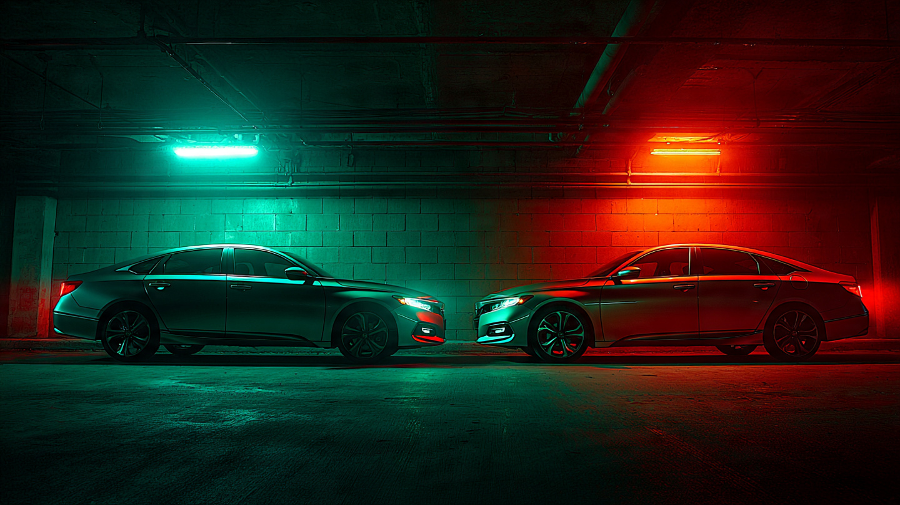

Same Price, Same Stars, Different Odds of Walking Away

According to the toxicology reports, everybody in this story was sober. Which makes the results worse. I ran a metric IIHS never publishes: occupant lethality ratio, calculated as FARS deaths divided by total fatal crashes involving each vehicle.[1] Lower means the car protects its own driver better. And between direct showroom competitors, the gaps are enormous.
Start with compact sedans. Ford Focus: 0.684 lethality. Honda Civic: 0.681. VW Jetta: 0.574. That is a 19% relative gap between the Focus and Jetta.[1] Not 19 percentage points. Nineteen percent more likely that a fatal crash kills you instead of the other party. Same dealership row, same price bracket, same IIHS stars. One in five extra dead occupants, explained entirely by which compact sedan they chose.
Midsize sedans tell the same story with a different villain. Honda Accord sits at 0.644 lethality across 7,102 FARS deaths. Hyundai Sonata: 0.541 across 1,887 deaths.[1] Honda is the brand your parents trust. Hyundai is the brand your parents call "the cheap one." FARS does not care about brand perception. Toyota Camry lands at 0.593, splitting the difference with 6,328 deaths and a reputation it half-deserves.
Compact SUVs compress the gap but still show a clear hierarchy. Chevy Equinox: 0.558. Ford Escape: 0.557. Down at the bottom, Mazda CX-5: 0.432 and Hyundai Tucson: 0.454.[1] A 29% spread, top to bottom, in a segment where every single entry earned Good or Acceptable on the IIHS overlap test.[2]
Why would identically rated vehicles diverge this much in the real world? Fleet age is part of it. A Civic or Accord with a 30-year production run has more old, pre-airbag units in FARS than a Sonata with a shorter history. That is a legitimate confound, and I cannot control for it with the aggregate data. But the pattern holds even in the compact SUV segment, where most competitors share similar production timelines and all are unibody crossovers.[3] Something beyond fleet age is separating these vehicles.
IIHS lab tests measure how a vehicle performs in a controlled 40mph frontal overlap into a deformable barrier.[2] Real crashes happen at every angle, every speed, into fixed objects and other vehicles of wildly different masses. A Good rating means the car passed the test. It does not mean the car will protect you equally well in the infinite variety of ways Americans manage to hit things.
Shopping advice, by segment: Compact sedan, pick a Jetta (0.574) or Elantra (0.633) over a Focus (0.684) or Civic (0.681). Midsize, Sonata (0.541) or Fusion (0.551) over Accord (0.644). Compact SUV, CX-5 (0.432) or Tucson (0.454) over Equinox (0.558). And check your VIN at nhtsa.gov/recalls. Every single model on this list has open recall campaigns.
Sources & References
- NHTSA, Fatality Analysis Reporting System (FARS), 2014–2023. Occupant lethality ratio = occupant deaths / total fatal crashes involving vehicle. nhtsa.gov
- IIHS, Vehicle Ratings. Frontal overlap, side impact, roof strength, head restraint evaluations. iihs.org
- IIHS, Vehicle Size and Weight. Weight remains the strongest single predictor of occupant survival in multi-vehicle crashes. iihs.org
Limitations
FARS captures fatal crashes only, roughly 1 in 180 total crashes. Injury outcomes are invisible here. Lethality ratios blend all model years into a single number; vehicles with longer production runs carry more legacy-era (pre-ESC, pre-side-curtain airbag) deaths in their averages. Driver demographics differ between models: Civic skews younger, Sonata skews older, and age correlates with crash type distribution. Crash mode mix (single-vehicle rollover vs. multi-vehicle frontal) varies by model and is not controlled for. Low-volume models (Mazda CX-5 at 162 deaths) have wider confidence intervals than high-volume models (Civic at 6,553 deaths). These rankings describe what happened, not necessarily what each current-model-year vehicle would do in isolation.